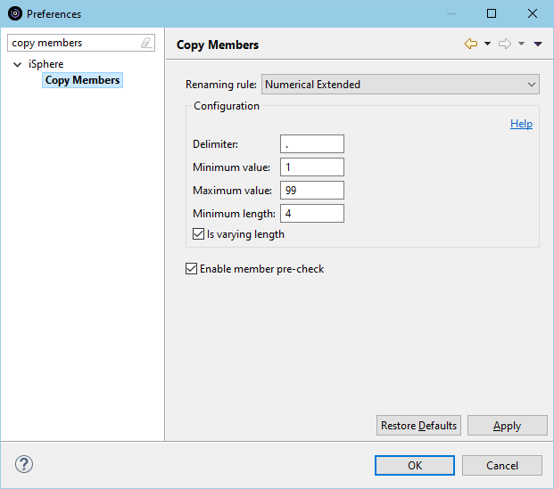

For now there is only one rule for producing names for backup members:
The Numerical renaming rule produces backup member names by adding a sequence number optionally separated by a delimiter character.
The available options are:
| Delimiter | - | Optional. Delimiter that separates the original member name from the sequence number. |
| Minimum value | - | Starting sequence number. |
| Minimum value | - | Maximum sequence number. Renaming a member fails when the maximum sequence number has been reached. |
Sequence numbers are generated as fixed-length numbers, such as .01, .02, .03 to .99. For example:
| Original name | - | DEMO1 |
| First backup | - | DEMO1.01 |
| Second backup | - | DEMO1.02 |
| Third backup | - | DEMO1.03 |
There will be an exception, when the new member name exceeds 10 characters.